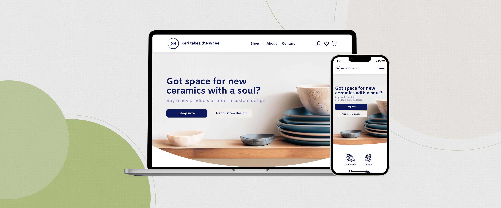

Keri takes the wheel

Project overview
Main links
- Video desktop prototype
- Video mobile prototype
- Figma desktop prototype
- Figma mobile prototype
- Medium article
The project’s name is “Keri Takes the Wheel”. So who is Keri? Keri is an American who currently lives in the Netherlands. She works in sales at a software company. A long time ago in high school, she started doing pottery and didn’t do it for 12 years, and then she decided to return to her hobby.
She decided she wanted a personal website for herself to sell her pieces. A success for her starts when the sales cover the costs of her hobby. She wants the process to be atomised, clear, and pleasant for her customers. Nowadays she sells regularly on Etsy.
Our main goal was: to attract more customers to the business and to make the sell-buy process easier for the user and seller.